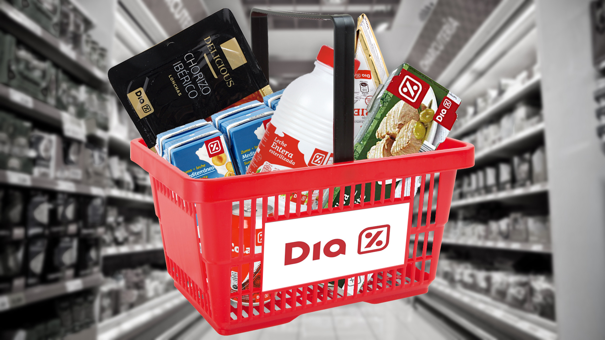

Bienvenidos al sitio Web de nuestro Supermercado DIA
Construimos la comunidad DIA desde cada barrio
Nuestra red de más de 6000 tiendas de proximidad nos permite estar muy presentes en los distintos barrios y conocer de primera mano su realidad a través del talento que nos brindan. Aquí empieza la comunidad DIA, que integra a empleados, franquiciados y clientes.

Hacemos accesible una alimentación de calidad para todos
Trabajamos para facilitar una alimentación de calidad para todas las familias que nos eligen, independientemente de su localización o de su presupuesto
Cada DIA más cerca
Dado lo especial de la situación, Grupo DIA se ha volcado por una parte en garantizar el abastecimiento, y por otra, en implementar las medidas de seguridad en tienda que propiciaran un entorno seguro para clientes, empleados y franquiciados. Garantizar el abastecimiento ha sido prioritario, especialmente durante el periodo de confinamiento. Para ello:
Se ha realizado un especial esfuerzo por parte de DIA, sus proveedores y resto de socios de la cadena para asegurar el suministro y volumen de producto requerido en la nueva situación.
Se han reforzado los equipos de tienda y almacén para garantizar la operación y la apertura al público de todos los puntos de venta
Se ha incrementado sustancialmente el servicio de venta online mediante la apertura de nuevos puntos de preparación de pedidos (dark stores) y mediante acuerdos con nuevos socios logísticos
Se ha puesto a disposición de aquellos clientes que no tenían posibilidad de desplazarse a la tienda ni de gestionar pedidos online un servicio de venta telefónica a través del servicio de atención al cliente
Todas estas medidas han permitido atender las necesidades de más de 20 millones de familias durante el confinamiento derivado del estado de alarma en Argentina. Propiciar un entorno seguro para clientes y empleados ha sido, y sigue siendo, uno de los puntos más importantes para Grupo DIA durante la pandemia. Por eso, la actividad de sus más de 6.000 tiendas está sometida a unas medidas de protección al cliente y al empleado que van más allá de lo legalmente establecido, incluyendo:
Refuerzo de la limpieza y desinfección de tiendas y especialmente de las superficies de contacto